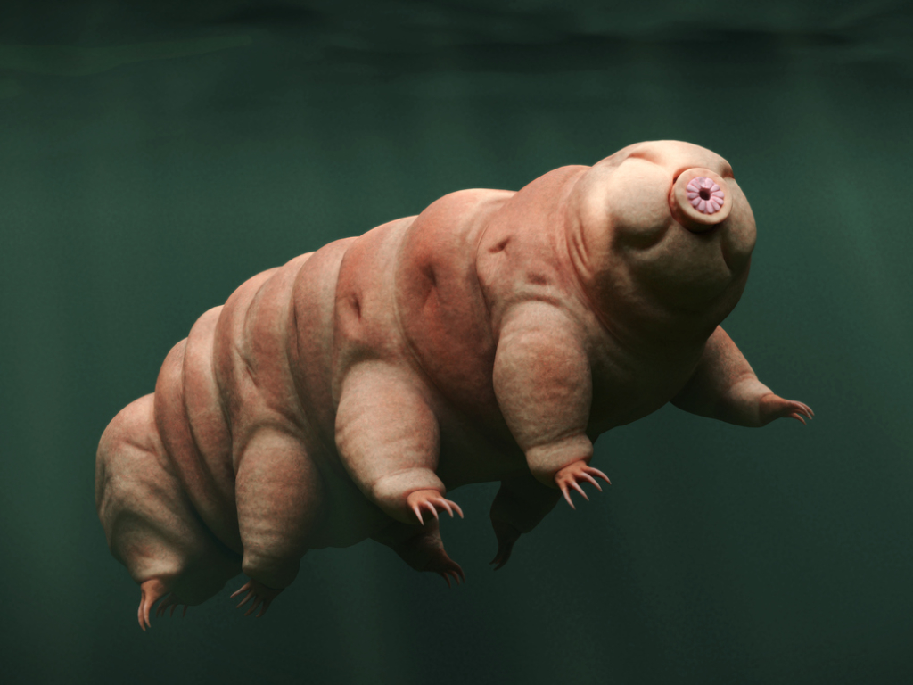
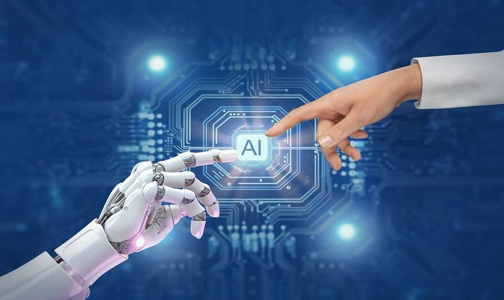
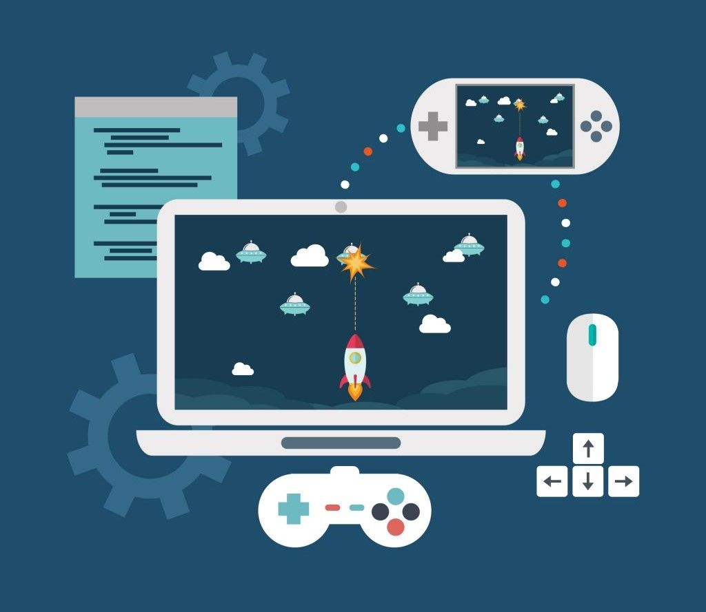

Lab 1 — Adaptar un video a otro idioma
Adaptación de un video a otro idioma con sus subtítulos correspondientes, doblaje y edición final

Lab 2 — MathIA's
Chatbot informativo sobre el Profesorado en Computación

Lab 3 — Página web y Tardígrados
Página web sobre los tardígrados, además de explicar cómo crear y publicar una web en GitHub Pages

Lab 4 — Creación de Videojuego
Creación de un videojuego simple utilizando Godot